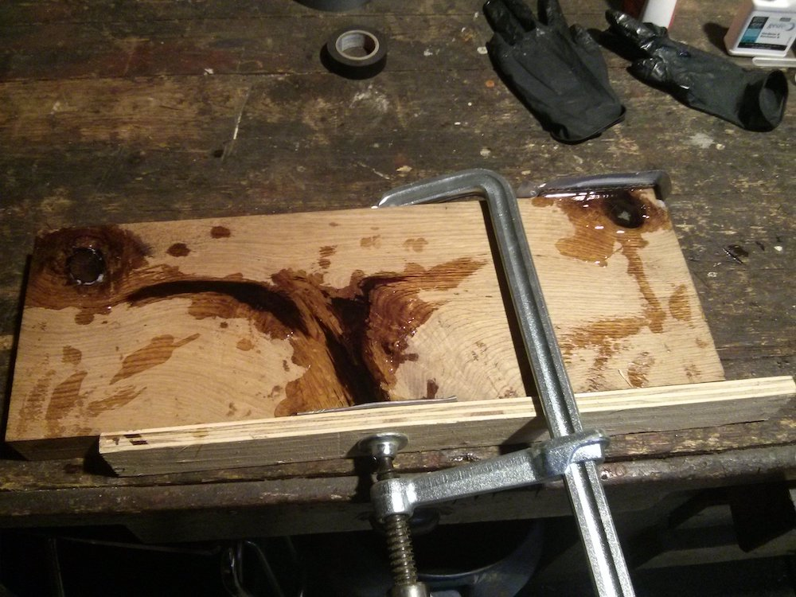
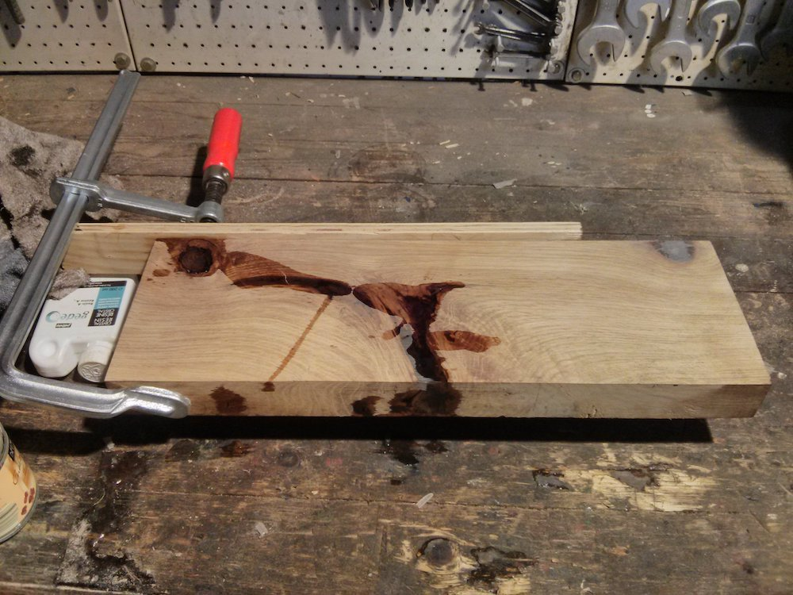
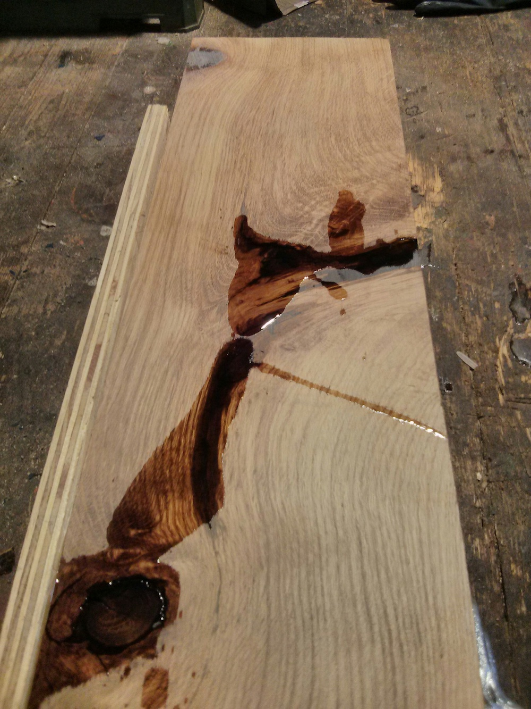
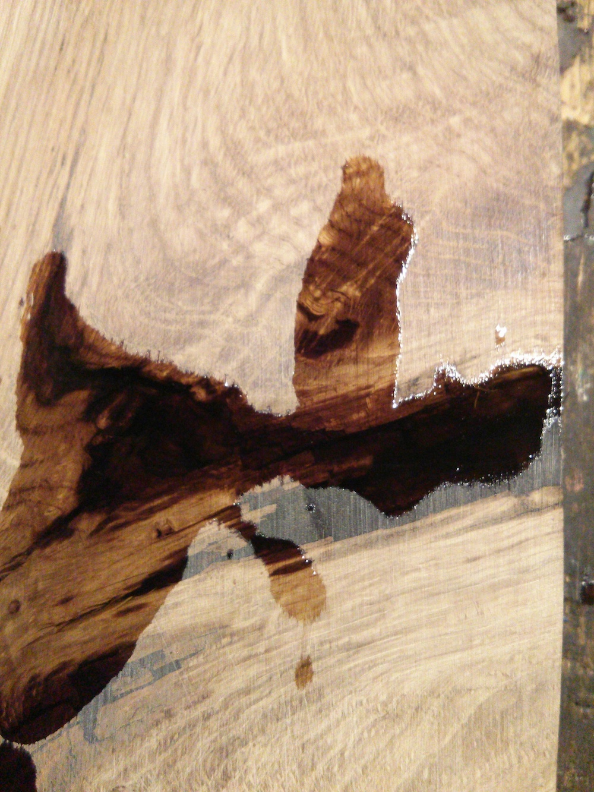
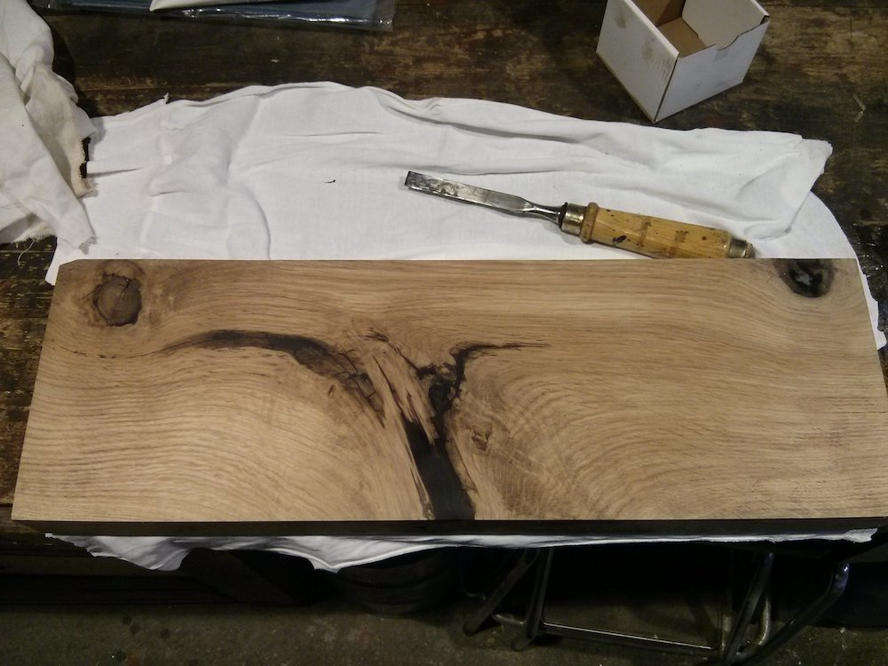
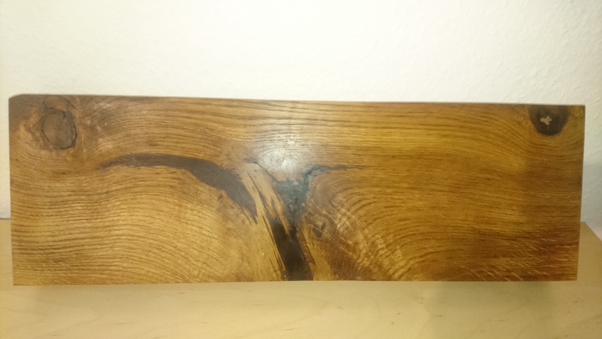
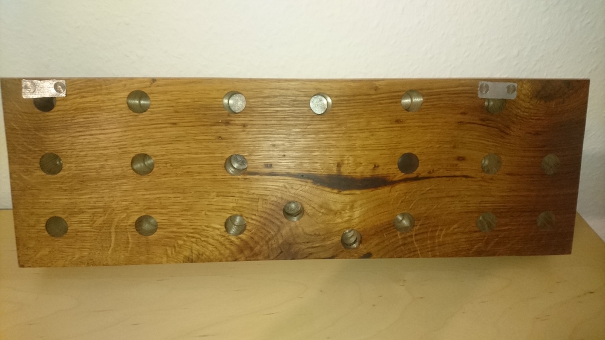
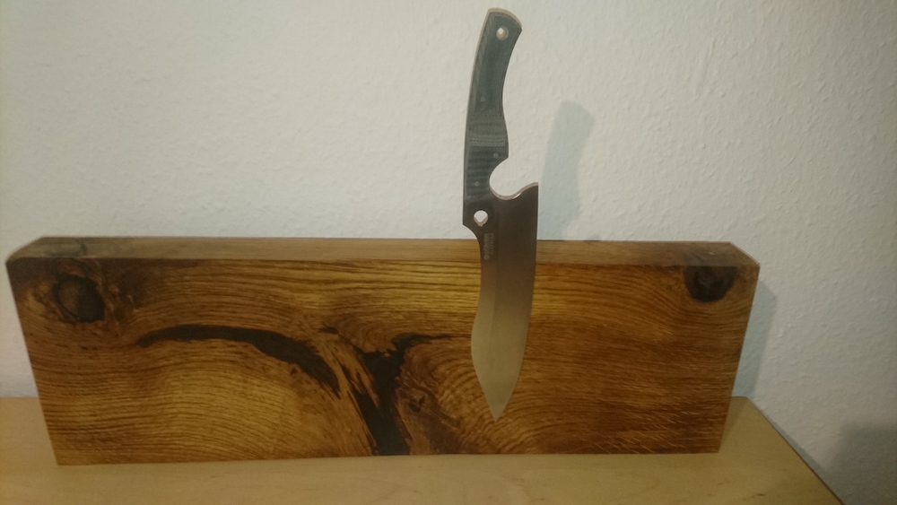

tgauweiler / Magnetic Knife Block
Introduction
After seeing some cool stuff done with epoxy i wanted to do something wood and epoxy. A knife block sounded like a doable idea.
Building
I found a damaged piece of wood and decided to close up the damaged parts with epoxy. The bottom part was really broken out, so i had to add some support wood to keep the epoxy inside.

After the epoxy was dry i sanded the piece down until it was smooth. There were still some holes in it, which again got filled with epoxy.
  
Finally all holes were gone and i got started to polishing the epoxy parts.

After some oil it looks really nice.

Then i added some neodym magnets to keep the knifes in place and some metal pieces to hang it on a wall.

It holds! And takes some force to take it off again.

Conclusion
Epoxy sticks to anything!! Wear gloves and make sure all holes are sealed before pouring.. Next time i will probably use no clear epoxy, since a light source is missing you can’t really see the inside of the big crack.